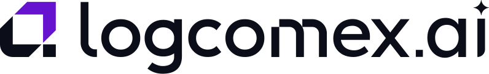

Engenharia de dados · AI/BI Dashboards · Genie · Databricks Apps — aplicados ao comércio exterior

Workshop LogComex × Databricks · Roteiro do instrutorMostrar, na prática e em uma tarde, como o time de dados da LogComex pode sair de arquivos brutos de comércio exterior (DIs, DU-Es, eventos de rastreamento de armadores) e chegar a produtos de dados prontos para o cliente final — um dashboard governado, uma interface de perguntas em linguagem natural e uma aplicação web — tudo em uma única plataforma, com governança do Unity Catalog do início ao fim.
00_Setup, ~3 min).logcomex_ws_<usuario>, um dashboard, um Genie space e um app com o seu nome — funciona tanto em workspaces individuais quanto em um workspace compartilhado.Os dados foram gerados com três "achados" para os participantes descobrirem com cada ferramenta — use-os para dar ritmo e gerar o efeito "uau" ao longo da tarde:
| Achado | O que aparece nos dados | Onde é descoberto |
|---|---|---|
| ⚡ Boom dos veículos elétricos | Importação da NCM 8703.80.00 (majoritariamente da China) cresce forte a partir de 2025: US$ 577,7 mi em 2024 → US$ 3,0 bi em 2025 → US$ 4,7 bi só até set/2026. | Dashboard (filtro Automotivo), Genie, App (aba NCM) |
| 🚧 Gargalo em Paranaguá | Desde jun/2026 o tempo médio de desembaraço marítimo em Paranaguá sobe de 2,3 para 5,9 dias, com mais DIs em canal vermelho (6% → 13%). | Lab 1 (1ª descoberta), Dashboard pág. 2, Genie |
| 🐢 Armador com atrasos crescentes | ZIM tem o maior atraso médio vs. ETA (5,5 dias, contra 2,0 dias da média dos demais), concentrado nas rotas da Ásia. | Dashboard pág. 2, Genie, App (Rastreamento) |
| Arquivo | Uso |
|---|---|
LogComex_Workshop.dbc | Pacote com todos os notebooks — o participante importa no workspace (Workspace → Import). |
00_Setup | Lab 0 · cria schema, volume, dados sintéticos, escolhe o warehouse e já cria o app (compute sobe em background). Tem modo fast-track. |
01_Engenharia_de_Dados | Lab 1 · Auto Loader, read_files, Silver com qualidade/quarentena/constraint, Gold, comentários, time travel, linhagem. |
02_Dashboard_AIBI | Lab 2 · cria e publica o dashboard Radar Comex via API + exercícios guiados. |
03_Genie | Lab 3 · cria o Genie space curado (instruções, exemplos SQL, perguntas sugeridas, benchmarks) + exercícios. |
04_Databricks_Apps | Lab 4 · gera o código do app, aplica permissões mínimas ao service principal, faz deploy + exercícios. |
05_Demo_Instrutor_App_React | Demo do instrutor (opcional) · publica o mesmo Radar Comex em React + FastAPI para o fechamento do Lab 4. |
00_Instrutor_Preparacao · 99_Limpeza | Preparação de workspace compartilhado (instrutor) · remoção dos recursos de cada participante. |
| Horário | Bloco | O que acontece |
|---|---|---|
| 13:00 – 13:30 | Chegada | Recepção, Wi-Fi, login no workspace, importação do .dbc. Peça para cada um já rodar o 00_Setup (ganha-se ~10 min de workshop e o compute dos apps sobe com folga). |
| 13:30 – 13:35 | Abertura | Boas-vindas, objetivos, agenda, regras do hands-on (ajudantes circulando, canal de dúvidas). |
| 13:35 – 13:47 | Teoria 1 | Data Intelligence Platform e Lakehouse: por que uma plataforma única para dados + IA. |
| 13:47 – 13:57 | Teoria 2 | Unity Catalog: governança, linhagem, compartilhamento — essencial para dados de clientes da LogComex. |
| 13:57 – 14:07 | Teoria 3 | Lakeflow (Connect, Declarative Pipelines, Jobs) e Delta Lake — engenharia de dados no Databricks. |
| 14:07 – 14:15 | Teoria 4 | Databricks SQL e AI/BI Dashboards. |
| 14:15 – 14:22 | Teoria 5 | AI/BI Genie: perguntas em linguagem natural com semântica curada. |
| 14:22 – 14:30 | Teoria 6 | Databricks Apps + como tudo se conecta para a LogComex · perguntas. |
| 14:30 – 14:40 | Lab 0 | Checagem do setup (quem não rodou, roda agora; quem teve problema usa fast-track). |
| 14:40 – 15:10 | Lab 1 | Engenharia de dados: Bronze → Silver → Gold. |
| 15:10 – 15:40 | Lab 2 | AI/BI Dashboards. |
| 15:40 – 15:50 | ☕ Intervalo | Use para destravar quem estiver atrasado (fast-track do Lab 1). |
| 15:50 – 16:20 | Lab 3 | Genie. |
| 16:20 – 16:45 | Lab 4 | Databricks Apps. |
| 16:45 – 17:00 | Encerramento | Recapitulação, mapa de casos de uso LogComex, próximos passos, pesquisa de satisfação. |
| Lab | Núcleo obrigatório | Pode cortar se atrasar |
|---|---|---|
| Lab 1 | 1.1 a 1.5 (Run das células + leitura guiada) | 1.6 governança (mostre só a linhagem na tela) |
| Lab 2 | Criar + explorar + 1 visualização com IA | Dataset SQL próprio, agendamento |
| Lab 3 | Criar + perguntas + ensinar "operação crítica" | SQL expressions, benchmarks |
| Lab 4 | Deploy + explorar + 1 alteração e redeploy | Desafio com Assistant, permissões |
catalogo permite trocar).fevm-serverless-stable-g01yyz). Adicione os participantes como usuários e rode
uma vez o notebook 00_Instrutor_Preparacao (concede USE CATALOG/CREATE SCHEMA e
CAN_USE no warehouse). Cada pessoa continua isolada no próprio schema/app.| Recurso | Por quê |
|---|---|
Unity Catalog + catálogo com CREATE SCHEMA | Cada participante cria o schema logcomex_ws_<usuario>. |
| Compute serverless para notebooks | Todos os labs rodam em serverless (sem cluster para configurar). |
| SQL Warehouse (serverless de preferência) | Dashboard, Genie e App. O setup reaproveita um existente ou cria um 2X-Small. |
| AI/BI Genie, Dashboards e Databricks Assistant | Labs 2 e 3; Assistant usado nos desafios dos Labs 1, 2 e 4. |
| Databricks Apps habilitado + cota de apps | 1 app por participante. Verifique o limite de apps do workspace para o tamanho da turma. |
00_Instrutor_Preparacao.LogComex_Workshop.dbc.05_Demo_Instrutor_App_React com o seu..dbc.00_Setup → compute Serverless → Run all.Sugestão: ~25 slides, poucos textos e uma demonstração rápida ao vivo no final de cada bloco (≤ 1 min). Sempre ancore os conceitos no dia a dia da LogComex: dados de comércio exterior em escala, de muitas fontes, servidos a clientes por meio de produtos com IA.
"Hoje uma DI nasce num arquivo do Siscomex e termina como um insight no produto de vocês. Quantas ferramentas existem nesse caminho? A proposta é que seja uma só."
catálogo.schema.objeto para tabelas, volumes (arquivos), funções, modelos, dashboards e Genie.GRANT), linhagem automática até a coluna, auditoria, tags e classificação de dados sensíveis (ex.: CNPJ)."O Genie não é um chatbot genérico: é o time de dados de vocês ensinando o vocabulário do comex — FOB, CIF, canal vermelho, transit time — uma vez, para todos usarem."
Notebook: 00_Setup · Execução: Run all (~3 min).
CREATE SCHEMA. Quem estiver muito atrasado: widget fast_track = sim e rodar a célula 5 — executa o Lab 1 inteiro.Notebook: 01_Engenharia_de_Dados · Dinâmica: célula a célula, o instrutor projeta e comenta; a turma acompanha.
| Passo | O que destacar | Resultado esperado |
|---|---|---|
| 1.1 Landing | read_files lê CSV direto em SQL, com schema inferido. | 10 DIs de ago/2026. |
| 1.2 Bronze | Auto Loader com availableNow: checkpoint, incremental, metadados de auditoria. JSON aninhado com read_files. | 45.274 linhas em bronze_importacoes. |
| 1.3 Arquivo novo | Chega o CSV de set/2026: só ele é processado — sem reprocessar 32 meses. | +1.766 linhas novas. |
| 1.4 Silver | Diagnóstico de qualidade → tipagem, padronização de países, dedupe com QUALIFY, enriquecimento (NCM, empresa, PTAX), quarentena e CHECK constraint. | 46.295 DIs válidas · 279 em quarentena · grafias de países: 77 → 26. |
| 1.5 Gold | 3 tabelas de negócio: balança mensal, desempenho de portos, situação de cada contêiner. | 1ª descoberta: Paranaguá 2,3 → 5,9 dias. |
| 1.6 Governança | Comentários de colunas (alimentam o Genie!), tags, DESCRIBE HISTORY, time travel e grafo de linhagem. | Linhagem arquivo → bronze → silver → gold. |
"Repare que não configuramos nada para ter linhagem, histórico ou auditoria — isso vem do Unity Catalog e do Delta. Em produção, este mesmo SQL vira um Lakeflow Declarative Pipeline ou um Job agendado."
Perguntas para a turma: Onde hoje vocês tratam duplicidade de DIs? Como garantem que um valor FOB negativo não chegue ao cliente?
Notebook: 02_Dashboard_AIBI · a 1ª célula cria e publica o dashboard Radar Comex (2 páginas + filtros globais, tema roxo/preto LogComex).
"Esse mesmo dashboard pode ser embarcado no portal de um cliente da LogComex, com filtro por linha garantindo que cada cliente veja só os próprios processos."
Notebook: 03_Genie · a 1ª célula cria o espaço curado (7 tabelas, glossário de comex, 3 exemplos SQL, 6 perguntas sugeridas, 3 benchmarks).
| Pergunta | Resposta esperada |
|---|---|
| Qual armador tem o maior atraso médio nas rotas vindas da Ásia? | ZIM (≈ 7,0 dias) |
| Quais os 10 maiores importadores de veículos elétricos em 2026? | Líder: Capixaba Autopeças Importação e Exportação Ltda |
| Qual o valor FOB total importado em 2025? | ≈ US$ 19,0 bi |
"Tudo o que o Genie respondeu passou pelas permissões do Unity Catalog de quem perguntou. Não há um atalho para os dados."
Notebook: 04_Databricks_Apps · o app foi criado no Lab 0, então o compute já está ativo.
app.py (Streamlit) e app.yaml (comando + variáveis) na pasta do usuário. Abra o app.py no editor e mostre as 4 abas e a função genie() (Conversation API em ~30 linhas).SELECT no schema, CAN_USE no warehouse e CAN_RUN no Genie.🏁 EXERCÍCIO DO LAB 4 (Top 10 destinos das exportações) e rodar a célula 4.3 de novo.app.py, um gráfico de pizza por via de transporte.05_Demo_Instrutor_App_React) ao lado do Streamlit: mesmos dados,
mesmo SSO e permissões, agora como produto (React + API FastAPI). Mostre a troca de filtros sem recarregar a página e o chat com o Genie."Esse é o caminho mais curto entre o time de dados e um produto: o mesmo dado governado, servido por um app com SSO, sem infraestrutura para manter. O time de dados prototipa em Streamlit; o time de produto entrega em React — na mesma plataforma. Para produção, versionem em Git e implantem com Asset Bundles."
| Sintoma | Causa provável → solução |
|---|---|
PERMISSION_DENIED ... CREATE SCHEMA no Setup | Catálogo sem permissão. Troque o widget catalogo por um catálogo onde o usuário pode criar schemas, ou (modalidade B) rode 00_Instrutor_Preparacao. |
Widget catalogo mostra hive_metastore | Workspace sem catálogo padrão no UC. Informe um catálogo do Unity Catalog no widget. |
| "Tabelas Gold não encontradas" nos Labs 2–4 | Lab 1 incompleto. Rode o 00_Setup com fast_track = sim (célula 5). |
| Notebook pede para criar cluster | Selecione Serverless no seletor de compute. |
| Dashboard com widgets vazios | Warehouse parado/iniciando: aguarde ~30 s e atualize. Confirme o warehouse em Data do dashboard. |
| Genie responde "não tenho acesso" | O usuário precisa de SELECT nas tabelas (ok no próprio schema) e CAN_USE no warehouse. |
Deploy do app: TimeoutError no compute | Compute ainda subindo ou parado — rode a célula 4.3 de novo (ela reinicia o compute automaticamente). |
| App abre mas mostra erro de permissão em SQL | A célula 4.2 avisou ⚠️ em USE CATALOG/warehouse: o instrutor/admin concede (ou rode 00_Instrutor_Preparacao) e recarregue o app. |
App: erro após editar app.py | Abra <url do app>/logz. Para voltar ao original: widget recriar_codigo = sim na célula 4.1. |
| Limpeza pós-workshop | Notebook 99_Limpeza (widget confirmar = sim) remove app, Genie, dashboard e schema do participante. |
| Limite de apps do workspace atingido | Participantes formam duplas (um app por dupla) ou removem apps antigos que sejam deles. |
| Tabela | Conteúdo | Linhas |
|---|---|---|
silver_importacoes | 1 linha por DI: importador, NCM, país, URF, via, incoterm, FOB/CIF/BRL, II estimado, canal, dias de desembaraço, armador. | 46.295 |
silver_exportacoes | 1 linha por DU-E: exportador, NCM, país de destino, porto, FOB. | 19.918 |
silver_eventos_embarque | Milestones dos contêineres (GATE_IN … GATE_OUT). | 32.711 |
silver_empresas · silver_ncm · silver_cambio_diario | Dimensões: 380 empresas, 37 NCMs, PTAX diária. | — |
gold_comercio_exterior_mensal | Balança mensal por fluxo, NCM, país, UF, porto e via. | 31.175 |
gold_desempenho_portos | DIs, canais e tempo de desembaraço por mês e URF. | 462 |
gold_embarques | 1 linha por contêiner: rota, ETA, transit time, atraso, status. | 5.200 |